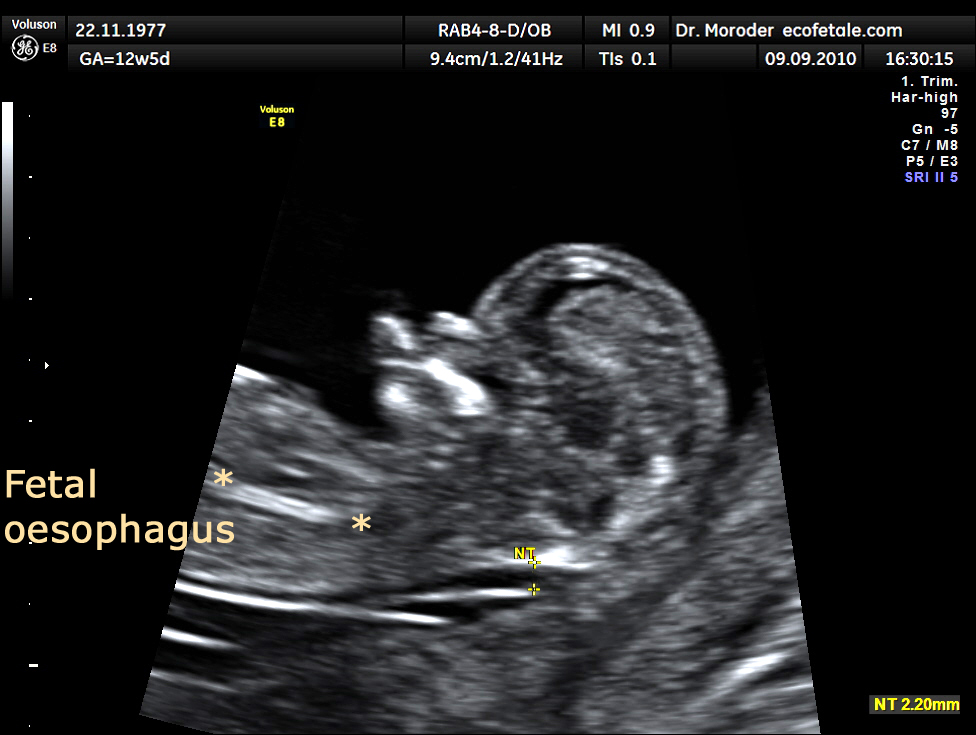

Página 15 · Parte G · TN 3,2 mm aos 12 semanas — o que fazer
Parte G · Genética · Caso: fechamento do braço genético
⚕
Gestante com 12 semanas e TN 3,2 mm (sem percentil informado). A numeração fecha o capítulo genético: TN alterada (> 2,5 mm) → risco de aneuploidia, não diagnóstico. O que fazer agora?
Gestante com 12 semanas e TN 3,2 mm (sem percentil informado): TN alterada (≥ 2,5 mm) → risco de aneuploidia, não diagnóstico. Confirmação no caso: BVC (ainda na janela 10–13) ou esperar amniocentese (± cordocentese depois) — decisão compartilhada. NIPT, se disponível, continua sendo rastreio (pode reestratificar risco, não fecha cariótipo sozinho).
Tópico 2
Oferecer rastreio; invasivo só com indicação e aceite
Conduta geral de investigação: oferecer/sugerir testes biofísicos e bioquímicos (rastreio); invasivo só se indicado e aceito. Serviços e livros variam na rotina básica de pré-natal; para residência, a maioria segue o Ministério da Saúde nos pontos discutidos — com as pegadinhas de fonte (cálcio, GBS, 6×7) declaradas, nunca silenciadas.
O pré-natal operacional ficou completo: calendário, suplementos, bateria, toxo, GBS, vacinas e o braço genético. O que a fisiologia da gestante e o diagnóstico de gravidez fundaram, o pré-natal aplica.
Pegadinha de prova
"TN 3,2 mm = T21" é o erro — TN é risco; diagnóstico exige invasivo ou NIPT + confirmatório.
Por que importa na prática
a aplicação numérica fecha o braço genético com 2,5 mm (P12) + BAQUE (P14) + NIPT (P13) + autonomia (P11) sob MS como chão (P1–P10).
Resumo operacional
TN 3,2 mm aos 12 sem = risco. BVC (10–13) ou esperar amnio. NIPT é rastreio adicional. Decisão compartilhada, consentimento, autonomia da gestante.

TN aumentada · referência
P15 caso TN 3,2 mm
Imagem de US obstétrico, licença CC. Arquivo local: media/B15-Nuchal_edema_Down_Moroder.jpg.
Case-flow TN 3,2 mmTN 3,2 @12 sem → risco → opções: BVC agora (10–13) · amnio depois (≥16) · NIPT como rastreio adicional · badge "consentimento".
Quiz
TN 3,2 mm com 12 semanas, sem percentil:
Virada: TN ≥ 2,5 mm = risco, não diagnóstico.
(A/C/D) confundem o desfecho.
Confirmação diagnóstica possível ainda na janela atual (12 sem):
Virada: BVC cabe na janela; amnio espera ≥16; decisão compartilhada.
(A/C/D) extrapolam.
Conduta geral de investigação genética no pré-natal:
Virada: rastreio não invasivo é a oferta; invasivo é decisão compartilhada.